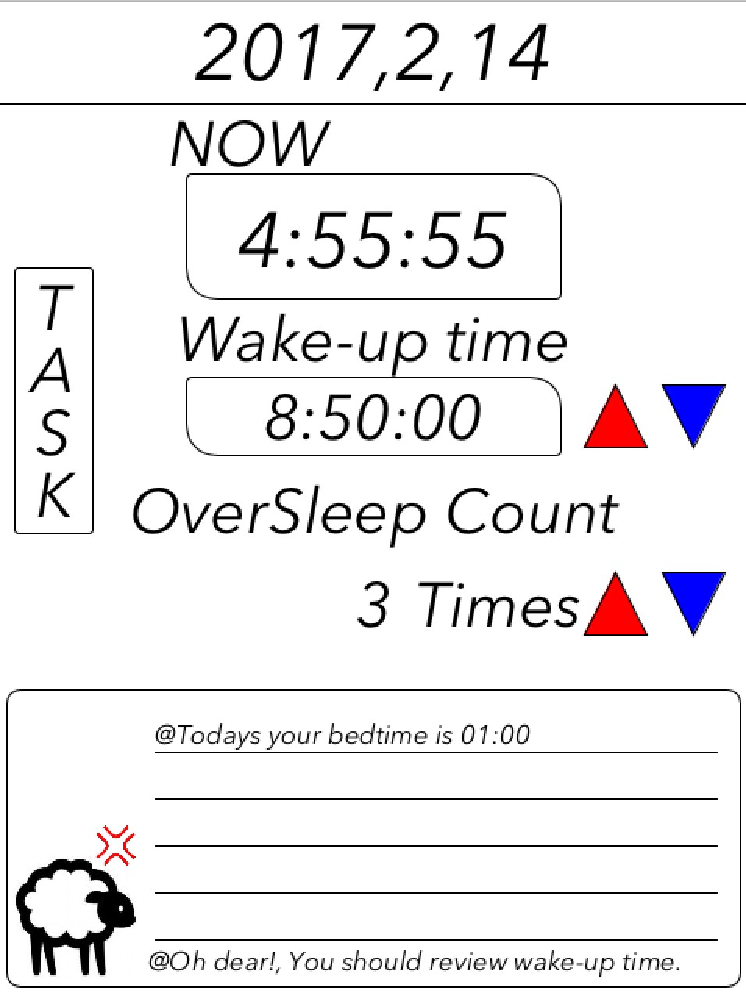
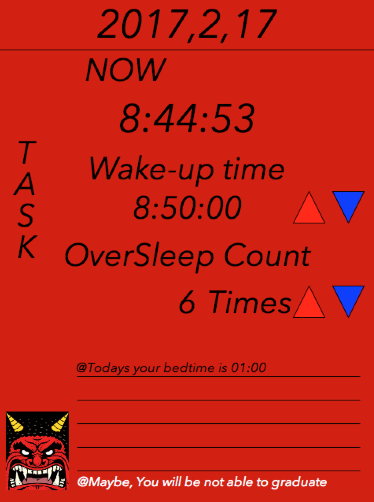

寝坊しがちな大学生へ
OVERSLEEP


寝坊した回数をカウントし、危機感を持たせてくれるアプリ
機能 : OVERSLEEPは寝坊回数をカウントできる寝坊管理アプリです。あらかじめ設定した睡眠時間に近づくと、羊がベッドに入ることを促してくれます。寝坊回数が上がると可愛い羊が鬼になります。また、なかなかエグいことを言うので、本気で寝坊しないように気をつけるようになります。一応次の日のタスクを追加することができます。
あれ？この授業何回寝坊したっけ？を無くしたい
背景 : 大学の講義で、Processingを用いてスケジュール管理アプリを作るという自由課題があり、その頃一人暮らしに余裕ができてきて、寝坊が増えてきた自分の為にこのアプリを制作しました。
使用言語、環境 : Processing
BACK